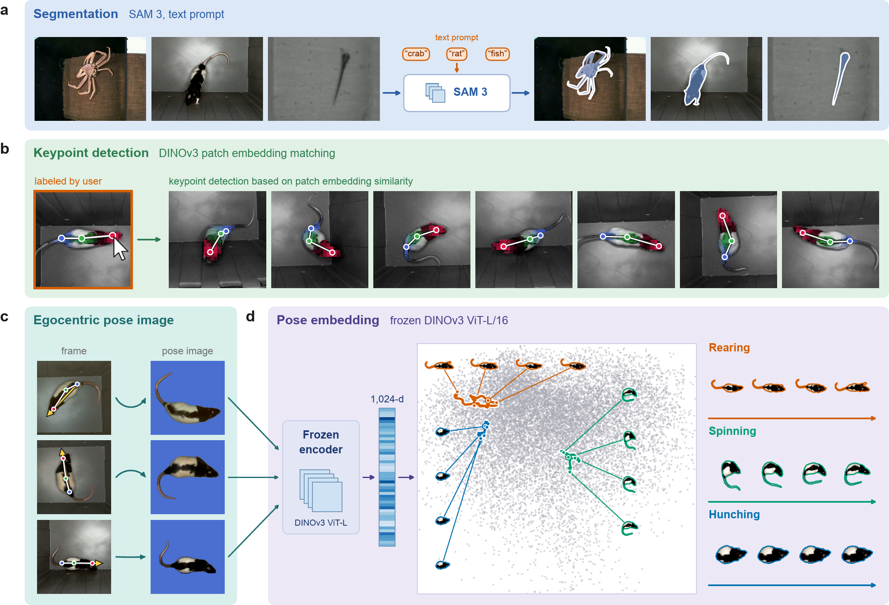
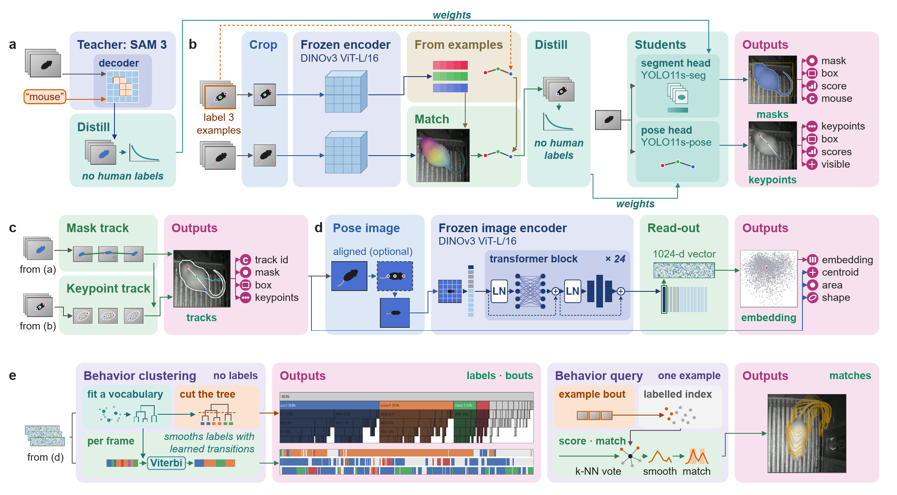
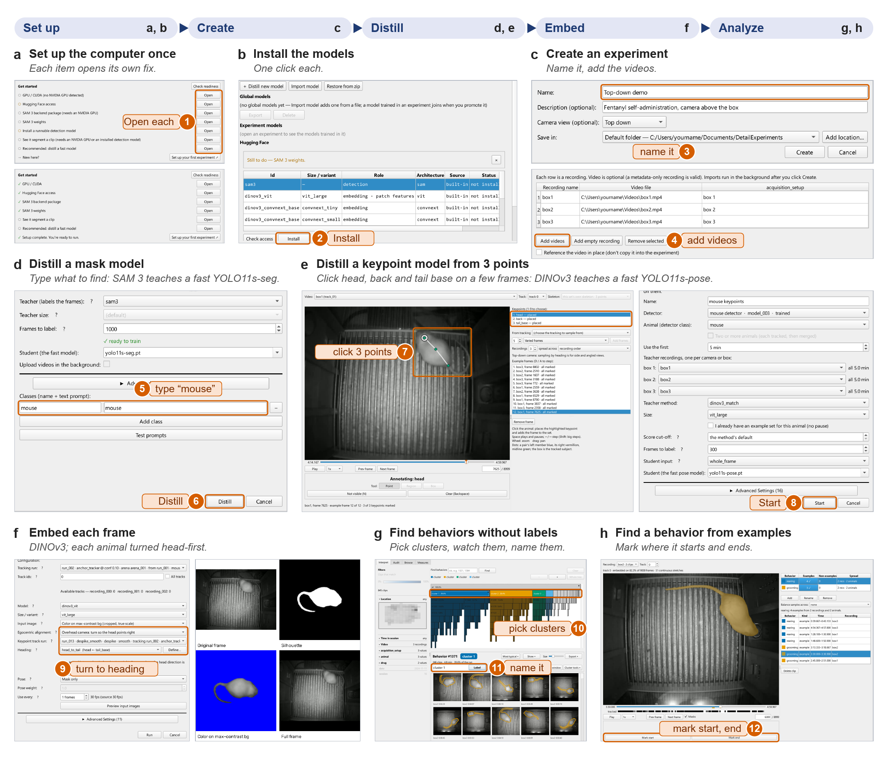

Detail: Species-Agnostic Behavior Analysis
Detail is an open-source video analysis tool for species-agnostic, setting-agnostic analysis of animal behavior, developed by Moses Lurbur with Dr. Vikram Iyer, René Just, Dr. Kevin Coffey, and Dr. Sam Golden. It detects and tracks animals with text-promptable foundation vision models (SAM 3 and DINOv3), with no manually labeled training data. Each frame becomes a pose embedding, a high-dimensional representation of posture used in place of keypoints for behavior clustering, querying, and comparison.
GITHUB REPOSITORY - DOCUMENTATION - USER GUIDES - BIORXIV PREPRINT
Under active development. Please report bugs and issues on the GitHub issues page.

Segmentation from a text prompt, keypoint detection by patch matching, egocentric pose images, and the pose embedding, in which rearing, spinning, and hunching fall in separate regions.
How it works
The pipeline turns a video into pose embeddings in four steps:
- Segment the animal from a text prompt such as “rat” (SAM 3).
- Track it across frames.
- Detect keypoints by patch matching from as little as one marked frame (DINOv3), to align the animal egocentrically.
- Embed the aligned pose image (DINOv3).
SAM 3 and patch matching can be distilled into small YOLO models that run faster than real time on a consumer GPU. Two analysis modules use the embeddings: temporal clustering finds behaviors without labels, and behavior querying finds a behavior from one or more examples. Results can be audited for precision, compared between groups, and exported.

The Detail pipeline: masks, keypoints, tracking, and embedding, followed by behavior clustering and behavior query.
In the app
The desktop app covers the whole workflow, from installation and model management through processing, analysis, and export. A command line and a Python API cover the same steps on servers and in scripts.

The Detail desktop app in twelve steps: set up, create an experiment, distill a mask model and a keypoint model, embed each frame, then find behaviors by clustering or from examples.
Install
Detail needs Python 3.12 or newer. SAM 3 needs an NVIDIA GPU; everything else also runs on Apple Silicon or a CPU. The documentation holds the step-by-step install guides.
INSTALL ON WINDOWS - INSTALL ON LINUX - GETTING STARTED
Learn
USER GUIDES - CONCEPTS - GUI - CLI - PYTHON API - KNOWN ISSUES
License
Detail is free software under the GNU Affero General Public License v3.0 (AGPL-3.0-only). The SAM 3 and DINOv3 model weights are not part of Detail; Detail downloads them from Hugging Face, where Meta publishes each under its own license.
Citing Detail
If you use Detail in your research, please cite our preprint:
Lurbur M, Iyer V, Just R, Coffey KR, Golden SA. Detail: species-agnostic, generalizable animal behavior analysis using foundation model embeddings. bioRxiv (2026).
BIORXIV PREPRINT (2026) [FULL DOWNLOAD]
Questions or ideas? Post an Issue on the Detail GitHub, or email sagolden@uw.edu.